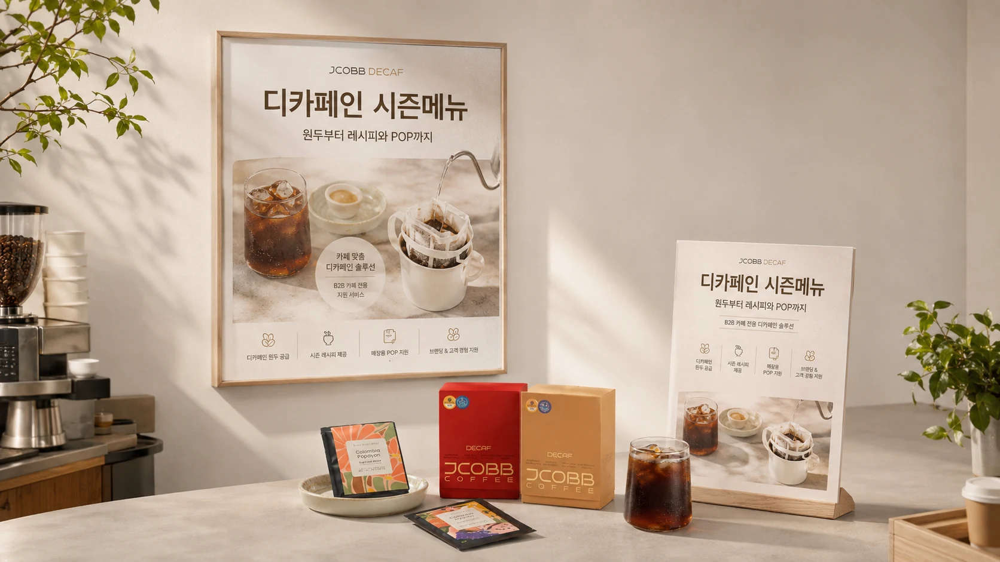
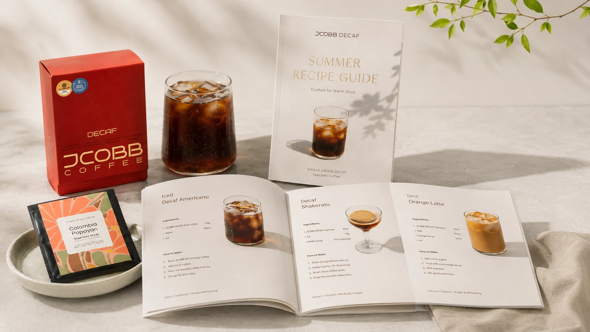

01
프리미엄 디카페인 원두
카페인 99.9% 제거, 클린 디카페인 공법, 아이스 메뉴에 적합한 풍미를 기준으로 제안합니다.

카페인 99.9% 제거, 클린 디카페인 공법, 아이스 메뉴에 적합한 풍미를 기준으로 제안합니다.
아이스 아메리카노, 디카페인 라떼, 샤케라또 등 기존 장비로 시작 가능한 레시피를 제공합니다.
메뉴를 만들고 끝내지 않고 고객에게 보이는 카운터 안내물과 포스터 이미지까지 함께 지원합니다.

복잡한 메뉴가 아니라 소규모 카페에서도 바로 적용할 수 있는 실전형 레시피를 중심으로 구성합니다.
디카페인 아이스 아메리카노, 아이스 라떼
디카페인 샤케라또, 오렌지 라떼 등 시즌 메뉴화 가능
기존 장비와 기본 재료 중심으로 시작 가능한 구성
테스트 후 결정할 수 있도록 상담과 샘플 중심으로 시작합니다.
신청 폼 작성
메뉴 방향 확인
시즌 메뉴 제안
매장 홍보물 제공
원두와 드립백 운영
지원 내용이 궁금하시면 테스트빈 상담으로 시작해보세요.